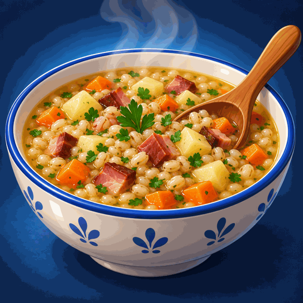

Città del viaggio: Trento
Orzetto alla trentina

Porzioni4
Preparazione20 min
Cottura1 h 10 min
Riposo10 min
DifficoltàFacile
Ingredienti
- Orzo perlato · 250 g
- Speck a cubetti · 100 g
- Patate · 2
- Carote · 2
- Sedano · 1 costa
- Cipolla · 1
- Porro (facoltativo) · 1
- Brodo di carne o vegetale · 2 litri
- Olio o burro · 2 cucchiai
- Prezzemolo e sale · q.b.
Preparazione passo passo
- Sciacqua l'orzo sotto l'acqua corrente.
- In una pentola fai appassire cipolla e speck nell'olio.
- Aggiungi le verdure tagliate a cubetti e falle insaporire 5 minuti.
- Unisci l'orzo e il brodo caldo e cuoci a fuoco basso per circa 1 ora, mescolando ogni tanto.
- Aggiungi il prezzemolo, aggiusta di sale e lascia riposare 10 minuti prima di servire.
Il consiglio dello chef. Deve risultare densa: se si asciuga troppo, aggiungi un mestolo di brodo.
Lo sapevi? È la minestra delle giornate fredde di montagna, preparata in Trentino da secoli.
Allergeni: Glutine, Sedano
Cucina questa ricetta anche in Tavolata
Nel gioco abbini gli ingredienti, completi le comande e restauri le città italiane, da Firenze a Milano. Gratis, con le ricette vere nel Ricettario.
Scarica su App StoreRicetta dal Ricettario di Tavolata: Puzzle di ricette.